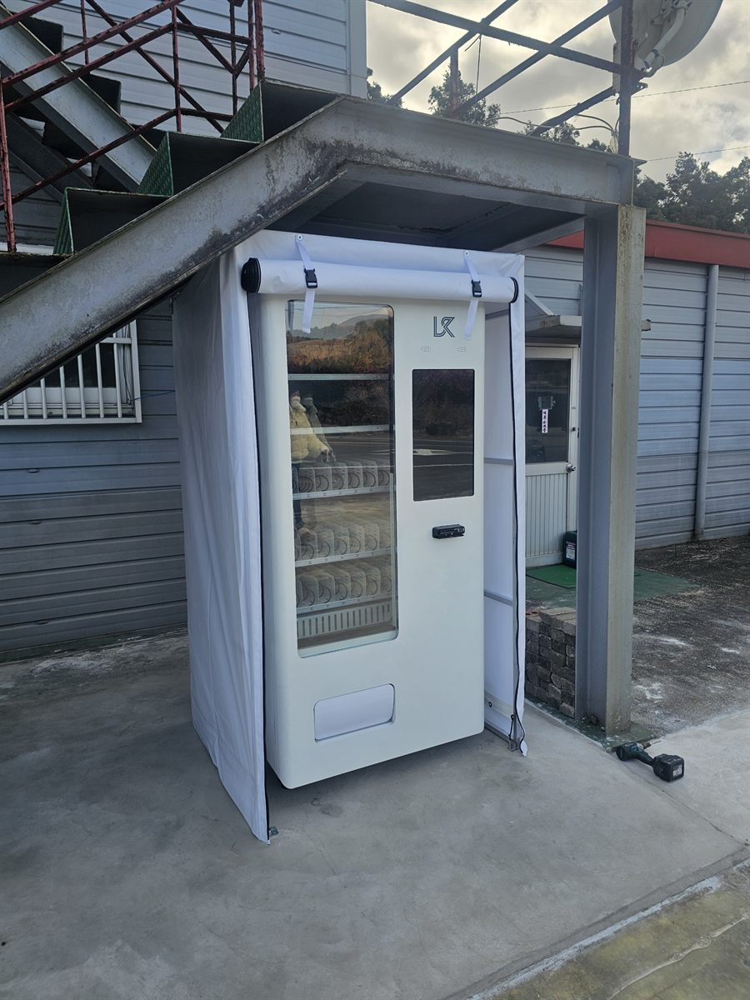

동대문구 무인자판기 설치
원룸촌 건물 외부 어닝 설치 냉장 자판기

원룸촌 문의는 다른 업종과 출발점이 다릅니다. 보통은 "어디에 놓을까"를 묻는데, 원룸 건물은 놓을 실내가 아예 없습니다. 1층이 주차장이거나 계단실만 있고, 공용 공간이라고 부를 만한 곳이 현관 앞 몇 평이 전부입니다. 이번 동대문구 현장도 마찬가지여서, 첫 방문의 절반은 건물 안이 아니라 건물 둘레를 돌며 보냈습니다.
밖에 놓는다면 저희가 보는 조건은 세 가지로 정해져 있습니다. 위가 막혀 있을 것, 바닥이 평평할 것, 밤에도 어둡지 않을 것. 이 건물은 외부 계단 아래가 콘크리트 처마로 덮여 있어 첫 조건이 그냥 해결됐습니다. 바닥도 이미 콘크리트로 쳐져 있어 기울지 않았습니다. 다만 비가 옆으로 들이치는 방향이라, 기계만 세우지 않고 어닝 커버를 한 겹 더 씌우는 쪽으로 정했습니다.
동대문구 원룸촌에 넣은 구성
원룸 거주자는 한 번에 많이 사지 않고 자주 삽니다. 그래서 대용량보다 1인분 단위가 기본입니다. 생수와 이온음료를 가장 잘 보이는 칸에 두고, 캔커피와 탄산을 그 옆에 붙였습니다. 간식은 개별 포장 빵·초코바·즉석 스낵처럼 방에 들고 올라가 바로 먹을 수 있는 품목으로 맞췄습니다. 편의점 가격과 비슷하거나 조금 낮은 선을 유지하는 것이 이 자리에서는 중요합니다. 몇백 원 차이 때문에 큰길 편의점까지 걸어가는 사람이 실제로 있기 때문입니다.
이 업종에서 가장 크게 작동하는 건 시간대입니다. 늦은 밤과 새벽에 매출이 붙습니다. 그 시간에 문을 여는 가게가 적으니 자판기가 대신 받는 구조입니다. 결제는 카드와 간편결제만 열어 두고 현금은 넣지 않았습니다. 사람이 없는 자리에 현금통을 두지 않는 편이 안전합니다. 재고와 내부 온도는 휴대폰으로 확인되고, 어느 칸이 비었는지도 보이기 때문에 건물주가 매일 나와 볼 필요가 없습니다.
- 기종 — 냉장 복합 기종 한 대. 실외 자리라 어닝 커버를 함께 시공
- 음료 — 1인분 단위 생수·이온음료를 눈높이에, 캔커피·탄산은 그 옆
- 간식 — 개별 포장 빵·초코바 등 들고 올라가 바로 먹는 품목
- 결제·관리 — 카드·간편결제만(현금 미사용), 재고·온도 원격 확인
밖에 놓아 보니 달랐던 점
좋은 쪽부터 말씀드리면, 실내 자리를 두고 고민할 일이 없어집니다. 좁은 현관을 막지 않고, 입주민 동선과도 겹치지 않습니다. 건물을 드나드는 사람만 쓰는 게 아니라 그 골목을 지나는 사람도 쓰기 때문에 이용자 폭이 실내보다 넓어집니다. 전기는 계단실 공용 콘센트에서 끌어 썼고, 시공은 어닝 설치까지 포함해 하루 안에 끝났습니다.
대신 밖은 밖입니다. 먼저 겨울과 장마철 관리가 실내보다 확실히 손이 갑니다. 기온이 크게 오르내리면 유리에 결로가 생겨 안이 잘 안 보이고, 그럴 때는 커버를 닫아 두는 편이 낫습니다. 둘째, 위가 막혀 있어도 옆으로 들이치는 비는 못 막습니다. 어닝을 씌운 이유가 그것이고, 이 비용은 실내 설치에는 없는 항목입니다. 셋째, 야간에 사람이 지켜보지 않는 자리라 조명과 CCTV 화각 안에 들어오는지를 반드시 확인해야 합니다. 이 세 가지가 안 되는 건물이면 저희는 실외 설치를 권하지 않습니다.
동대문구, 이런 자리가 잘 됩니다
동대문구는 대학과 원룸이 한 동네에 겹쳐 있는 구조가 뚜렷합니다. 회기동과 이문동은 경희대학교·한국외국어대학교 주변으로 원룸과 하숙이 촘촘하고, 전농동은 서울시립대학교 쪽으로 같은 성격의 주거지가 이어집니다. 청량리동과 제기동은 역과 전통시장을 낀 상권이라 유동 인구의 성격이 또 다르고, 장안동·답십리동은 주거지와 자동차 관련 상가가 섞여 있습니다. 휘경동과 용두동은 대로변 뒤쪽으로 빌라가 많은 동네입니다.
원룸촌 외에도 밤에 문 연 가게가 적고 사람이 사는 곳이면 조건이 비슷합니다. 고시원·하숙 건물, 오피스텔 저층부, 소규모 빌라 단지 입구, 대학 후문 골목의 상가 건물이 그렇습니다. 반대로 편의점이 바로 옆 건물에 있는 자리는 권하지 않습니다. 가격으로 이길 수 없는 자리에 기계를 세우면 결과가 나오지 않습니다.
동대문구 서비스 지역
전농동 · 답십리동 · 장안동 · 청량리동 · 제기동 · 용두동 · 휘경동 · 이문동 · 회기동 · 신설동
동대문구 전역에서 방문 상담이 가능합니다. 맞닿은 성북구·중랑구·성동구·종로구도 같은 담당자가 함께 다닙니다. 지역별 안내는 동대문구 무인자판기 설치 안내 페이지에서 보실 수 있습니다.
동대문구 무인자판기, 이렇게 시작하시면 됩니다
전화나 상담 신청으로 건물 주소만 남겨 주시면 됩니다. 담당자가 나가서 처마가 덮인 폭, 바닥 상태, 콘센트까지의 거리, 밤 조명을 확인합니다. 실외라면 어닝이 필요한지도 그 자리에서 판단합니다. 기종과 품목을 정하고 설치일을 잡으면 끝이며, 설치비는 받지 않습니다. 기계는 구입·렌탈·임대 중에서 고르실 수 있어 초기 비용 없이 시작하셔도 됩니다.
놓을 자리가 비를 그대로 맞거나, 밤에 너무 어둡거나, 바로 옆이 편의점이라면 그 자리에서 솔직히 말씀드립니다. 실외 설치는 한 번 세우면 옮기기가 실내보다 더 번거로워서, 처음에 자리를 제대로 고르는 일이 설치 자체보다 중요합니다.
※ 사진은 픽프리가 시공한 설치 사례이며, 글에 적힌 지역의 현장 사진은 아닙니다.
함께 많이 찾는 키워드
동대문구 무인자판기 · 동대문구 자판기 설치 · 동대문구 자판기 임대 · 동대문구 자판기 렌탈 · 서울 무인자판기 · 서울 자판기 설치 · 회기동 자판기 · 이문동 자판기 · 전농동 자판기 · 장안동 자판기 · 답십리 자판기 · 청량리 자판기 · 제기동 자판기 · 휘경동 자판기 · 원룸촌 자판기 · 빌라 자판기 · 고시원 자판기 · 오피스텔 자판기 · 실외 자판기 설치 · 자판기 어닝 커버 · 냉장 자판기 · 생수 자판기 · 음료 자판기 · 스낵 자판기 · 무인키오스크 설치 · 스마트 자판기 · 카드 자판기 · 자판기 설치비용 · 자판기 원격관리